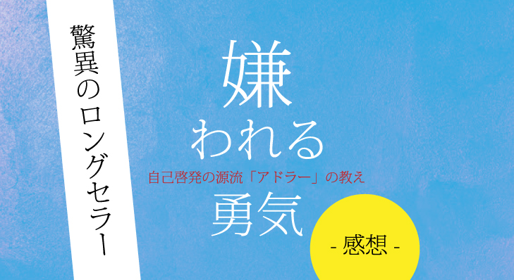
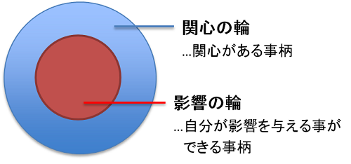

名著、「嫌われる勇気」とは？！
言わずもがなこの本は有名ですよね！！
一応説明しておくと、フロイトやユングと並び「心理学の三大巨頭」と称され、世界的名著である『人を動かす』の著者・Ｄ・カーネギーや『7つの習慣』の著者・スティーブン・Ｒ・コヴィーなど、自己啓発のメンターたちに多大な影響を与えた
アルフレッド・アドラーの思想をまとめたものであり、
悩みを消し去り、幸福に生きるための「処方箋」のすべてが書かれているというものです。
- 「嫌われる勇気」の最重要ポイント
- 承認欲求を否定している？！
- 「嫌われる勇気」はなぜ必要？
- まとめ
「嫌われる勇気」の最重要ポイント
この本で伝えていることは非常にシンプルかつ、それゆえ理解しがたいものになっています。
それは、
「全ての悩みは、対人関係から生まれる」
というものです。
それゆえアドラーは、
「悩みを消し去るには、宇宙のなかにただひとりで生きるしかない」
とも言っています。
身長が低いという人の「劣等感」を例に挙げてみましょう。
もしも、この人が宇宙でただ一人で存在していなければ、身長がどれだけ小さかろうが「劣等感」は生まれないのです。
比べる他者が存在しないからので、自分の身長が低いなどとは思いもしないからです。
このように、我々を苦しめる劣等感は「客観的な事実」ではなく、「主観的な解釈」だと述べています。
更に、この「客観的な事実」を動かすことはできないが、「主観的な解釈」はいくらでも動かせるとも述べています。
（この考え方は、『7つの習慣』における第一の習慣に似通った考え方ですね！）
この「劣等感」は必ずしも悪いものではなく、正しく扱うことができれば、努力と成長への刺激になり得ます。
しかし、
「私は学歴が低いから成功できない」とか、
「私は器量が悪いから結婚できない」などと、
劣等感を言い訳に使うことを「劣等コンプレックス」といい、
自らの劣等感をある種の言い訳に使い始めた状態（なんの成長も見込めない状態）は危険だという風に、
「劣等感」と「劣等コンプレックス」の二つを明確に分けています。
健全な劣等感とは、他者との比較の中で生まれるのではなく、
「理想の自分」との比較から生まれるもの
なのです！
もし、対人関係の軸に「競争」を置いてしまっていると、すべてを勝ち負けで判断するようになり、他者全般のことを、ひいては世界のことを「敵」とみなすようになり、
心の休まる暇が一切なくなります。
社会的成功をおさめながら幸せを実感できない人が多いのは、彼らが競争に生きているからなのです。
人と同じ物差しで比べてしまうことほど、自分を苦しめているものはありません！
承認欲求を否定している？！
「おっと、これは大きく出たな！！」っていう感じですよね(笑)
前提としてアドラーは、「自分の課題」と「他者の課題」を分離して考える必要があると言っています。
つまり、
他者が私をどう思うのか、わたしに対してどのような評価を下すか、それは「他者の課題」であって、わたしにはどうすることもできない。
ということです。

『7つの習慣』でおなじみのコヴィーさん風に言うなら、
「自分の課題」にあたるところが「影響の輪」で、
「他者の課題」にあたるところが「関心の輪」ということですね！
なので、承認欲求における「周りから認められる」というのは、自分でどうにかコントロールできるものではなく、他者が判断するもの(他社の課題)なのです。
つまり、他人の期待を満たす必要はなく、むしろ、
他者からの評価ばかりを気にしていると、最終的には
他者の人生を生きること
になるのです。
その瞬間、あなたの人生の主人公はあなたではなくなります。
他者もまた、「あなたの期待を満たすために生きているのではない」ので、相手が自分の思う通りに動いてくれなくても、それが当然であり、怒ってはいけないということです。
ユダヤ教の教えにこんな言葉があります。
「自分が自分のために自分の人生を生きていないのであれば、いったい誰が自分のために生きてくれるだろうか」
答えは言わずもがなですよね。
あなたの人生はあなたにしか歩めないのです。
「嫌われる勇気」はなぜ必要？
ついにこの本の根幹部分です。
なぜ「嫌われる勇気」が必要なのか？
そもそも、わざわざ嫌われたいと願う人間はどこにもいないはずです。
他者から嫌われたくないと思うこと。
これは、人間にとってきわめて自然な欲望であり、衝動です。
カントはそうした欲望のことを「傾向性」と呼びました。
そのような傾向性に身を任せ、
他者からの承認ばかりを必要とする生き方は不自由だ。
ということです。
人の目ばかりを気にして、言いたいことやしたいことができない人生なんてまさに不自由ですよね。
なのでアドラーは、
「自由とは、他者から嫌われることである。」
と言っています。
もちろん、無理やり嫌われにいくようなことではありません。
しかし、誰かに嫌われているということは同時に、
「自由を行使し、自由に生きている証であり、自らの方針に従って生きていることのしるし」なのです。
まとめ
「自分の人生の主人公は自分しかいない」
ということを力強く教えてくれるような本です。
今まで読んだ本の中で三本の指には絶対入るほど、私が感銘を受けた本です。
どうしても人の目を気にしてしまう。
人にどう思われるかが怖い。
そんな風に息苦しい日々を送っている人は是非一度手に取って見てください。